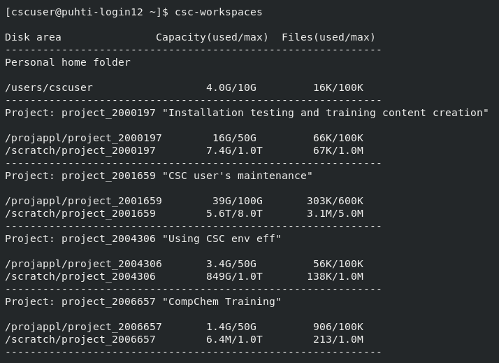

Disk areas#
Similar to your own computer, also supercomputers have different directories readily available. Their use and names are a bit different though:
Puhti disk areas#
Name |
Access |
Path |
Cleaning |
Capacity |
Number of files |
Use |
|---|---|---|---|---|---|---|
Personal |
|
No |
10 GiB |
100 000 files |
personal settings and files |
|
Project |
|
No |
50 GiB |
100 000 files |
installation files |
|
Project |
|
180 days |
1 TiB |
1 000 000 files |
main working area |
Temporary fast disks#
CSC Docs: Login node local tmp
$TMPDIRfor compiling, cleaned frequently.CSC Docs: NVMe -
$LOCAL_SCRATCHin batch jobs,NVMe is accessible only during your job allocation, inc. interactive job
You must copy data in and out during your batch job
If your job reads or writes a lot of small files, using this can give 10x performance boost
Avoid unneccesary reading and writing
Avoid unnecessary reads and writes of data to improve I/O performance
Read and write in big chunks and avoid reading/writing lots of small files
If unavoidable, use fast local NVMe disk, not Lustre (i.e.
/scratch)
LUMI disk areas#
LUMI has similar main disks, but different temporary disks.
Disk status#
Display usage and quota of all your disk areas:
csc-workspaces

Display the amount of data and number of files within a given folder:
LUE
module load lue
lue --display-level=2 /scratch/project_200xxxx/
path, total size, in dir size, % of total, % of dir
---------------------------------------------------
/scratch/project_200xxxx/dirA 8.4GB 356KB 100.0 100.0
results 3.7GB 458MB 44.15 44.15
simu1 2.8GB 522MB 32.84 74.38 NOSIZE:1
simu2 521MB 521MB 6.02 13.64 NOSIZE:1
installation 1.4GB 48KB 16.2 16.2
gcc10 351MB 351MB 4.05 25.02
clang15 351MB 351MB 4.05 25.02
intel 350MB 350MB 4.04 24.94
Some best practice tips#
Take backups of important files. Data on Puhti disks is not backed up.
Allas is best CSC option for back-up.
Github or similar for code.
Supercomputer disks do not work well with too many small files (see the file limits above)
Plan your analysis in a way that too many files are not needed.
Keep the small files in one zip-file, unzip it only on local fast disks during the analysis.
Don’t create a lot of files in one folder
Databases:
Only file databases (SQLite, GeoPackage) can be kept in supercomputer disks.
For PostgreSQL (but not PostGIS) use CSC CSC Docs: Database-as-service.
For any other database set up virtual machine in cPouta.